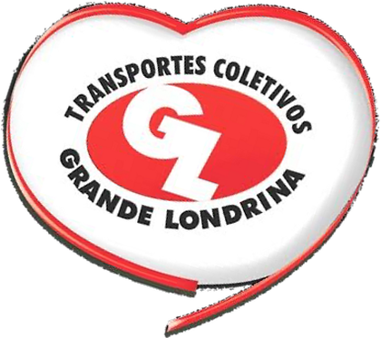

IPV
Pontualidade
--%
Média 2026
Meta 93%
ICV
Cumprimento
--%
Média 2026
vs mês anterior
KM
Quilometragem
--
TCGL 2026
mês atual
IPV
Pontualidade
Meta 93%
--%
No horário · Média 2026
Mês a mês
--
--%
No horário--%
Atrasado--%
Adiantado--%
Últimos 12 meses
Meta
Média móvel 3m
ICV
Cumprimento de Viagens
--%
ICV · Média 2026
Mês a mês
--
--%
Programadas--
Realizadas--
Suprimidas--
Últimos 12 meses
ICV mensal
Média móvel 3m
KM
Quilometragem TCGL
Frota ativa --
--
Km percorridos · TCGL 2026
Mês a mês
--
--
Km/dia médio--
Veículos ativos--
Dias com dados--
Mês a mês · 2026
Média móvel 3m
AO VIVO
Pontualidade em Tempo Real
Somente TCGL
--%
No horário agora
-- de -- veículos em rota
Carregando indicador oficial…
No horário----%
Atrasado----%
Adiantado----%
--
em rota
Frota monitorada--
Em rota--
Ocioso--
Fora de serviço--
CLIMA
Previsão do Tempo
Londrina · PR
--°
Hoje · --
Máx --° · Mín --°
Sensação--°
Umidade--%
Vento-- km/h
Chance de chuva--%
Próximos dias
Ao vivo
--:--:--
----°C
Transportes Coletivos Grande Londrina
Portal CIOP · Mobilidade em tempo real
Carregando próximo painel…
Campanha
